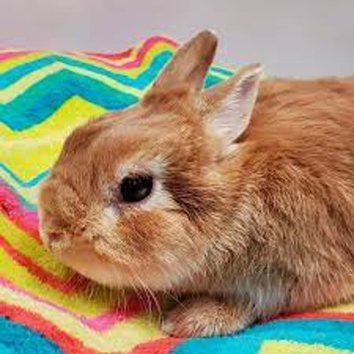
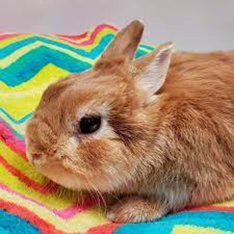

Overview
Purpose
we are nationwide rescue And adoption center That cares for and finds families for rabbits rescued from unfortunate situations with locations from Vancouver to Saint John's.
Audience
Trying to cater to people of all ages looking to pitch into a cause or adopt a pet
Branding
Website Logo

Style Guide
Color Palette
Palette URL:
https://coolors.co/396e94-e7c24f-a43312-381d2a-aabd8c| Primary | Secondary | Accent 1 | Accent 2 |
|---|---|---|---|
| dc1515 | b40000 | 740000 | ff5656 |
Typography
Heading Font: Young Serif
Paragraph Font: Helvetica
Normal paragraph example
Rabbits are gentle timid creatures that require care and love if raised his pets many of our rabbits that come from last in ideal circumstances and now are looking for proper families to adopt them.
Colored paragraph example
Trips vary from mild and great for families, to trips exclusively for physically fit and experienced rafters. No matter what type of river adventures you are seeking, White Water Rafting Company can make it happen for you.
Navigation
Site Map
Content
Home page
The Canadian Rabbit shelter
Home, Adoption, Contact Us
Under image text
we are a nationwide rescue And adoption center That cares for and finds families for rabbits rescued from unfortunate situations with locations from Vancouver to Saint John's.
Adopted today
Rabbits are gentle timid creatures that require care and love if raised as pets many of our rabbits come from last in ideal circumstances and now are looking for proper families to adopt them.
Under image text
adopt me, adopt me, adopt me
Helping hands with distribution
We have developed a very good chain of distribution for getting food, Shelter, and work implements To our locations across Canada in to generous material and time. In addition to our own vehicle fleet we work closely with airlines and other shipping companies to deliver goods across Canada.
hands-on Bunny snuggles
As mentioned before rabbits require a good amount of care and love if you are an animal lover but unfamiliar with handling animals that are alright because one of our trained professionals. On the other hand, if you have a background in animal care and are looking for work we will accept all the help we can get.
Slogen-Run to the rabbit shelter
10 AM - 1:00 PM, 5:00 PM - 8:00 PM, Volunteer here
Images for the Home page
 



[Page 2]
The Canadian Rabbit shelter
Home, Adoption, Contact Us
adoption
Fluffles, age: 4, details
Ruffles, age: 2, details
Yuki, age: 5, details
Mittens, age: 1, details
Leo & Flapjack, age: 2 & 4, details
Snow twins, age: 4, details
Print forms and background checks
Images for the Page 2


[Page 3]
Home, Adoption, Contact Us
Contact Us
Requirements
part time: Must have the proper background checks. Must be gentle and kind to bunnies. Must be able to listen to instructions on how to feed and groom them or any other special needs. Must not be allergic.
full time: Must have the proper background checks. More intensive care of rabbits requires certified vet credentials or a college or university degree. Must have proper driver licensing for transporting goods and donations. Business and management degrees and experience would be welcome.
How To Help
10:00 AM - 1:00 PM, 5:00 PM - 8:00 PM
Volunteer At any location
Donate, Support, Host An Event
important Info
shelter@rabbit.com, 780-335-2319, Fax: 780-479-8946
Images for the Page 3


Wireframes
Create three wireframes for your site. One for each page and list them here
Home
[Any additional details about home that the wireframe does not make clear]
[Page 2]
[Any additional details about page 2 that the wireframe does not make clear]

[Page 3]
[Any additional details about page 3 that the wireframe does not make clear]